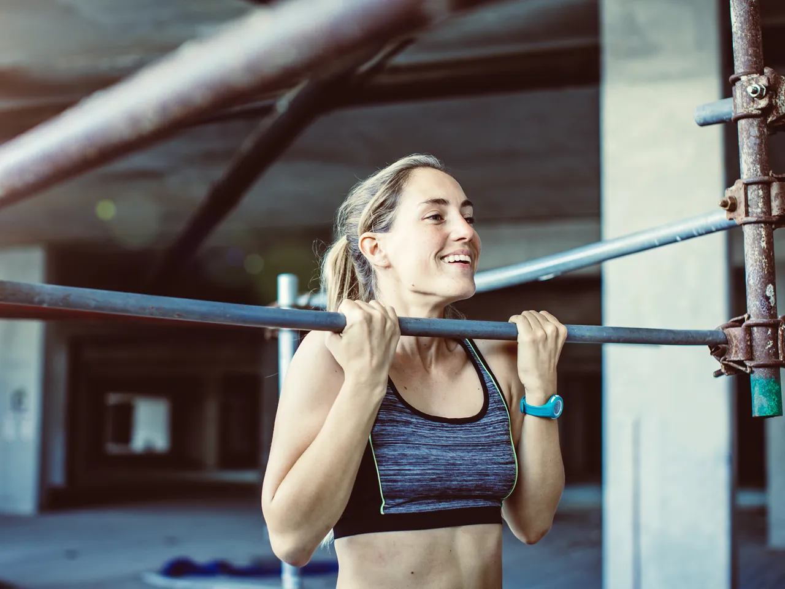

Bicep Workout

Barbell curl targets your biceps brachii muscle as well as the brachialis

chin-up are increasing strength and definition of the upper arms, specifically the biceps, the posterior deltoids of the shoulders and the teres major and latissimus dorsi muscles of the back.

Drag curls target the biceps brachii, the major muscle at the front of the upper arm.

Reverse curls are commonly adopted within resistance training programs to help activate the biceps brachii and brachialis and build arm muscle.

Resistance band curl are ideal for strengthening muscles and bones, without requiring whole-body movement.